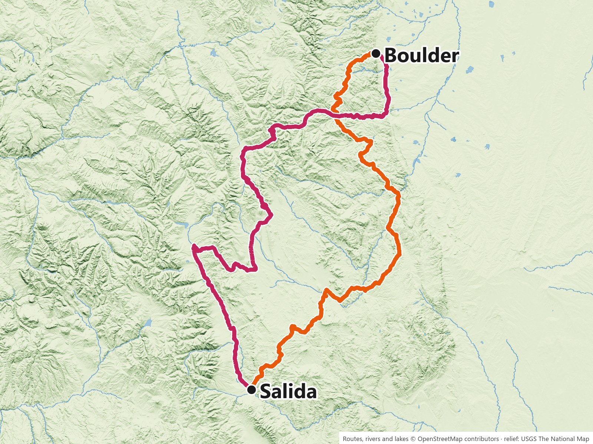
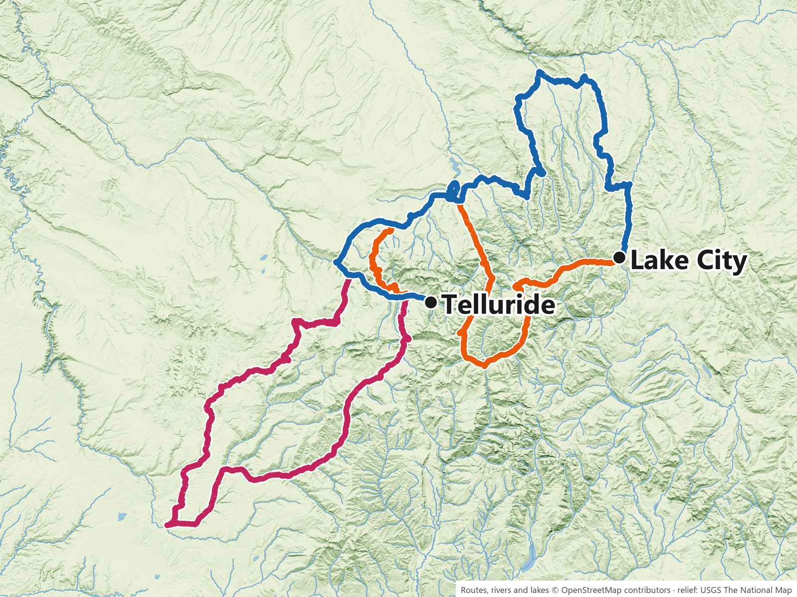
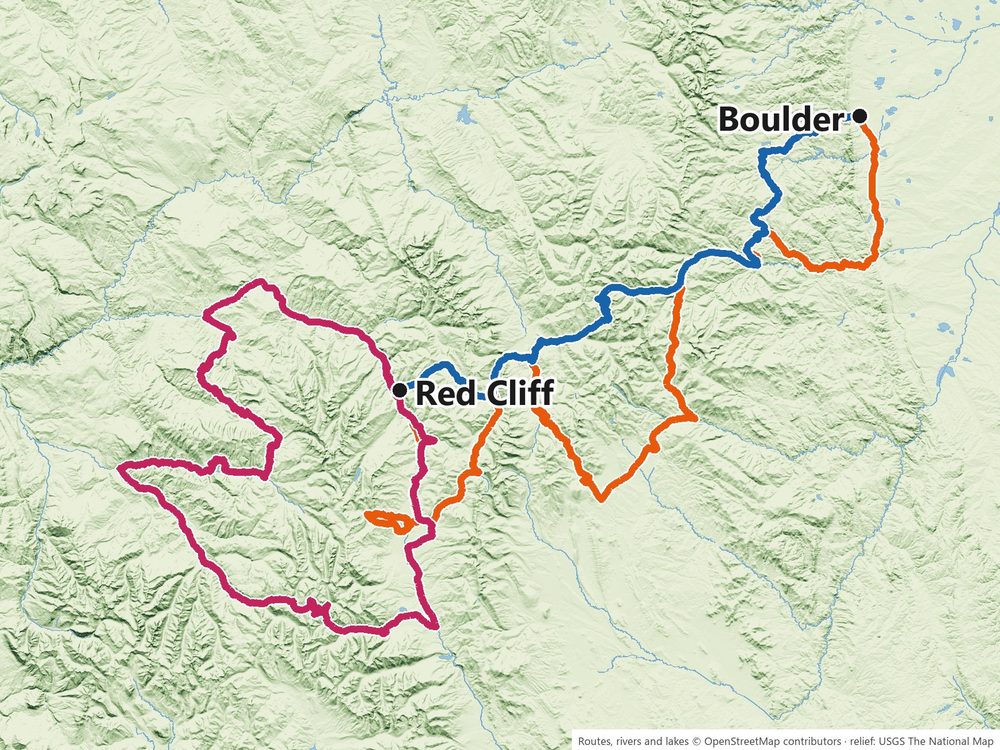
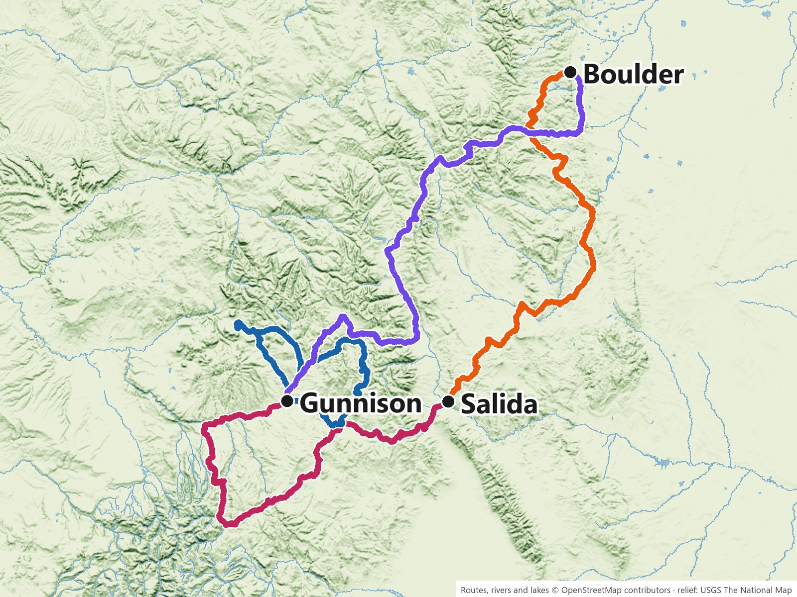
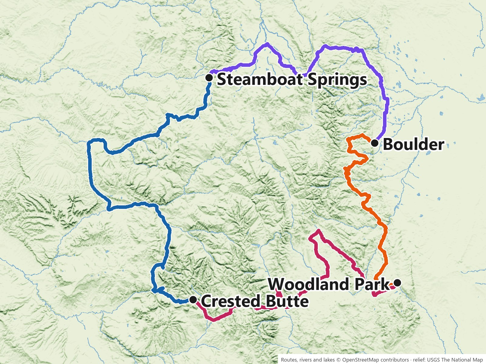

Shortest first

2 days · 1 night · from Boulder
Salida Overnight
Gold-rush back roads to a river town with hot springs, then three high passes home.
- 🛣410 mi
- ⛰37% dirt
- 📅July to September

3 riding days · tow to Lake City · 2 nights in Telluride
Telluride by Trailer
The high San Juans: ghost towns above timberline, the Million Dollar Highway, and two nights in a box canyon.
- 🛣387 mi
- ⛰45% dirt
- 📅Late September

3 days · 2 nights in Red Cliff
Red Cliff
Over Guanella and Boreas passes to a hidden canyon town, then a loop day over Independence Pass and up the Frying Pan.
- 🛣526 mi
- ⛰18% dirt
- 📅July to September

4 days · Salida, then 2 nights in Gunnison
Gunnison
The most dirt in the catalog: old railroad passes, Lake City, a loop day over Kebler and Cumberland passes, and home over Cottonwood.
- 🛣793 mi
- ⛰42% dirt
- 📅July to September

4 days · a big loop from Boulder
Five Passes Loop
A grand tour: fossil beds, Cottonwood and Kebler passes, hot springs by the river, the Flat Tops, and home over Buffalo and Cameron passes.
- 🛣825 mi
- ⛰25% dirt
- 📅July to September